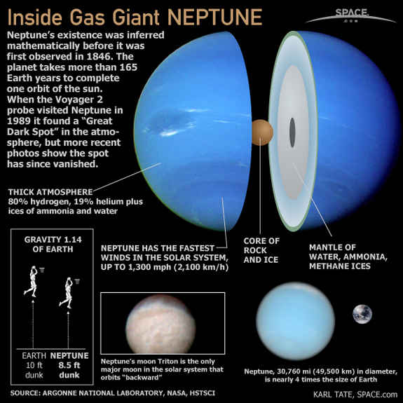
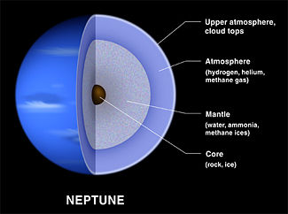

Neptune is the eighth and farthest known planet from the Sun in the Solar System. It is the fourth-largest planet by diameter and the third-largest by mass. Among the giant planets in the Solar System, Neptune is the most dense. Neptune is 17 times the mass of Earth and is slightly more massive than its near-twin Uranus, which is 15 times the mass of Earth and slightly larger than Neptune. Neptune orbits the Sun once every 164.8 years at an average distance of 30.1 astronomical units (4.50 x 109 km). Named after the Roman god of the sea, its astronomical symbol is a stylised version of the god Neptune's trident.
Neptune is not visible to the unaided eye and is the only planet in the Solar System found by mathematical prediction rather than by empirical observation. Unexpected changes in the orbit of Uranus led Alexis Bouvard to deduce that its orbit was subject to gravitational perturbation by an unknown planet. Neptune was subsequently observed with a telescope on 23 September 1846 by Johann Galle within a degree of the position predicted by Urbain Le Verrier. Its largest moon, Triton, was discovered shortly thereafter, though none of the planet's remaining known 14 moons were located telescopically until the 20th century. The planet's distance from Earth gives it a very small apparent size, making it challenging to study with Earth-based telescopes. Neptune was visited by Voyager 2, when it flew by the planet on 25 August 1989. The advent of the Hubble Space Telescope and large ground-based telescopes with adaptive optics has recently allowed for additional detailed observations from afar.
Internal Structure

Neptune's internal structure resembles that of Uranus. Its atmosphere forms about 5% to 10% of its mass and extends perhaps 10% to 20% of the way towards the core, where it reaches pressures of about 10 GPa, or about 100,000 times that of Earth's atmosphere. Increasing concentrations of methane, ammonia and water are found in the lower regions of the atmosphere.
The mantle is equivalent to 10 to 15 Earth masses and is rich in water, ammonia and methane. As is customary in planetary science, this mixture is referred to as icy even though it is a hot, dense fluid. This fluid, which has a high electrical conductivity, is sometimes called a water-ammonia ocean. The mantle may consist of a layer of ionic water in which the water molecules break down into a soup of hydrogen and oxygen ions, and deeper down superionic water in which the oxygen crystallises but the hydrogen ions float around freely within the oxygen lattice. At a depth of 7000 km, the conditions may be such that methane decomposes into diamond crystals that rain downwards like hailstones. Very high pressure experiments at the Lawrence Livermore National Laboratory suggest that the base of the mantle may comprise an ocean of liquid carbon with floating solid 'diamonds'